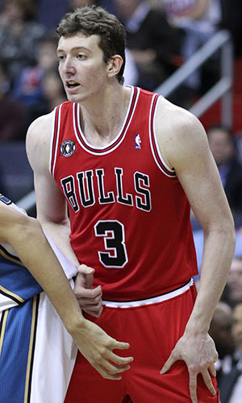

|  |
Матчи |
76 |
|
Передачи (всего/среднее) |
74 |
1 |
| В основе |
76 |
|
Подборы в защите (всего/среднее) |
504 |
6.6 |
| Время (всего/среднее) |
1981:49 |
26:05 |
Подборы в атаке (всего/среднее) |
244 |
3.2 |
| Очки (всего/среднее) |
557 |
7.3 |
Подборы (всего/среднее) |
748 |
9.8 |
| 2-очковые броски (всего/среднее) |
213/412 |
2.8/5.4 |
Перехваты (всего/среднее) |
29 |
0.4 |
| 2-очковые броски (% реализации) |
51.7% |
|
Потери (всего/среднее) |
95 |
1.3 |
| 3-очковые броски (всего/среднее) |
0/0 |
0/0 |
Блокшоты (всего/среднее) |
54 |
0.7 |
| 3-очковые броски (% реализации) |
0% |
|
Блокшоты соперника (всего/среднее) |
89 |
1.2 |
| Штрафные броски (всего/среднее) |
131/225 |
1.7/3 |
Фолы (всего/среднее) |
144 |
1.9 |
| Омер Ашик |
Штрафные броски (% реализации) |
1.9 |
|
Коэффициент полезности (всего/среднее) |
841 |
11.1 |